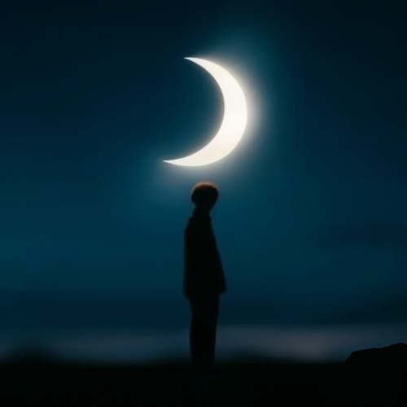

Bajo la Luna
Había conducido hasta aquí, lejos de todo lo que amaba, lejos de todo lo que odiaba, lejos de todo, sin saber muy bien por qué. Y ahora estaba solo, sin amor y sin odio, sin nada, bajo la Luna. ¿Estaba solo? No... ¡Me sentía solo! Hacía frío, mucho frío, yo sentía mucho frío y me miraba las manos, temblorosas, pero no de frío, sino de miedo, pues mi piel se había tornado pálida, blanquecina, como la de un cadáver. Frío y pálido, como un cadáver solitario, así me sentía yo bajo la Luna. Miré hacia arriba, preguntándome por qué había buscado en otras ocasiones su abrigo y protección, como cuando había estado enamorado, si ahora me sentía tan desválido y ansioso de calor frente a ella. Me preguntaba por qué me había fascinado desde siempre esta Luna, si siempre había estado tan lejana, tan fuera de mi alcance como ahora lo estaba todo, todo lo que amaba y todo lo que odiaba, al encontrarme en este siniestro, apartado, en este lejano lugar.
Pero no había respuestas. Un frío y solitario cadáver bajo la Luna no necesita respuestas, ni amor, ni odio; no necesita nada porque ya nada tiene importancia para él. Y entonces me puse a caminar, pero como no sabía hacia dónde ir, como no tenía a donde ir, caminaba en círculos alrededor de mi propia sombra pálida y mortecina. ¡Ojalá estuviese enamorado para sentir el calor y la protección que necesitaba! Pero no lo estaba; estaba solo, me sentía solo. Me detuve, ¿qué sentido tenía el seguir dando vueltas sobre mi propia sombra? Miré al cielo y la Luna seguía siendo hermosa aunque a mí ya no me lo quisiese parecer. Pero a la Luna no le importaba lo que pudiese pensar yo que acababa de convertirme en un fantasma bajo su fantasmagórica luz.
Y le grité a la Luna. ¡Aunque yo no le importase tendría que oirme gritar! Como si fuese un lobo, alcé mi rostro hacia el cielo y grité mi frío y grité mi soledad y grité mi miedo y grité mi pálida sombra; grité mi lejanía de todo, de todos, de ella misma. Grité hasta que mi voz se rompió. Grité hasta que ya no pude hacerlo más. Grité hasta que la Luna tuvo que escuchar mi desesperación.
Pero nada pasó. La Luna continuó su camino bañándolo todo con su luz, con su hermosura, con su indiferencia. Volví a mirar mis manos, y aunque seguían pálidas, mortecinas, ya no temblaban. Las llevé a mi rostro, podía sentir el calor que mi cuerpo desprendía. Y escuché latir a mi corazón. Entonces fue cuando comprendí. Allí, sin voz, lejos de todos, lejos de todo, en el silencio, bajo la Luna, podía ver con claridad lo que de verdad importaba, lo que de verdad tenía sentido. Allí, bajo la Luna, en el silencio, en el frío, en la soledad, me había descubierto a mí mismo.